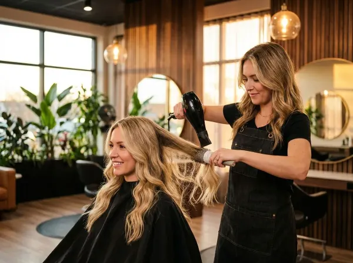

Damenschnitt & Coloration
Frischer Schnitt, neue Farbe oder komplette Typveränderung — Ihr Wunsch ist unser Auftrag.

Schönheit beginnt beim Haar
Ganz gleich, ob Sie einen frischen Schnitt, eine neue Farbe oder ein komplettes Umstyling wünschen — bei S1 Haircut nehmen wir uns die Zeit, Ihre Vorstellungen wirklich zu verstehen. Denn die beste Frisur ist die, die zu Ihrem Leben passt.
Wir arbeiten mit bewährten Farbtechniken und hochwertigen Produkten, die Ihr Haar schützen und langanhaltend strahlen lassen. Von der dezenten Auffrischung bis zur mutigen Veränderung — bei uns sind Sie in besten Händen.
Schnitt, Farbe und mehr
Schnitt & Föhnen
Präziser Schnitt mit professionellem Föhnen und Finish — für den perfekten Alltagslook.
Coloration & Tönung
Vollcoloration, Ansatzfarbe oder sanfte Tönung — intensive Farben, die lange halten.
Strähnchen & Balayage
Von klassischen Folien-Strähnchen bis zum trendigen Balayage — natürliche Lichtreflexe für Ihr Haar.
Braut-Styling
Hochsteckfrisuren und Braut-Looks, die Ihren großen Tag perfekt machen. Inkl. Probetermin.
Fragen zu Damenschnitt & Farbe
Eine einfache Coloration dauert 60–90 Minuten. Balayage oder Strähnchen können 2–3 Stunden beanspruchen, da hier besondere Sorgfalt gefragt ist.
Balayage ist eine Freihand-Technik für einen natürlichen, sonnengeküssten Effekt. Klassische Strähnchen mit Folie ergeben einen gleichmäßigeren, definierteren Look.
Unbedingt! Wir empfehlen einen Probetermin 4–6 Wochen vor der Hochzeit, damit wir verschiedene Varianten ausprobieren können.
Wir arbeiten mit hochwertigen Profi-Produkten, die schonend zum Haar sind und langanhaltende Ergebnisse liefern. Im Beratungsgespräch empfehlen wir die beste Lösung für Ihren Haartyp.
Ja, Ombré gehört zu unseren Spezialitäten. Der sanfte Farbverlauf von dunkel zu hell wirkt natürlich und ist besonders pflegeleicht — ideal, wenn Sie nicht alle 4 Wochen zum Nachfärben kommen möchten.
Lust auf Veränderung?
Buchen Sie Ihren Beratungstermin — wir finden gemeinsam den Look, der zu Ihnen passt.
Termin vereinbaren